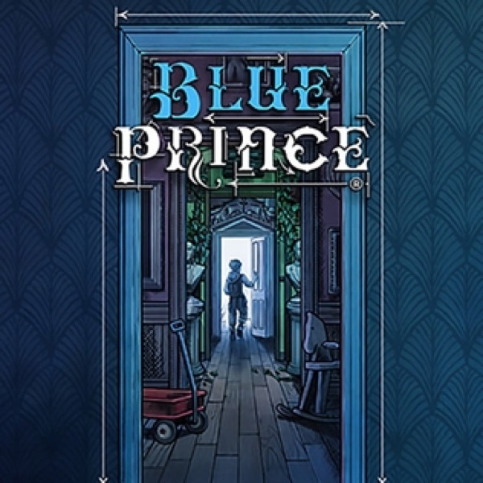

Puzzle · 2025
Blue Prince
A house that redraws itself daily; deduction as domestic architecture.

Cover: Wikipedia: Blue Prince
Facts
- Released
- 2025-04-10
- Genre
- Puzzle
- Category
- Puzzle
- Platforms
- Nintendo, PC, PlayStation, Xbox
- Developers
- Dogubomb
- Publishers
- Raw Fury
PC requirements
- Minimum
- [object Object]
- Recommended
- [object Object]